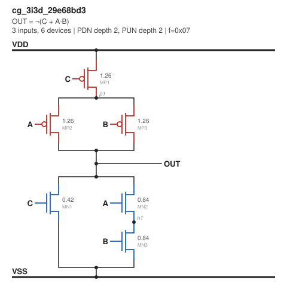
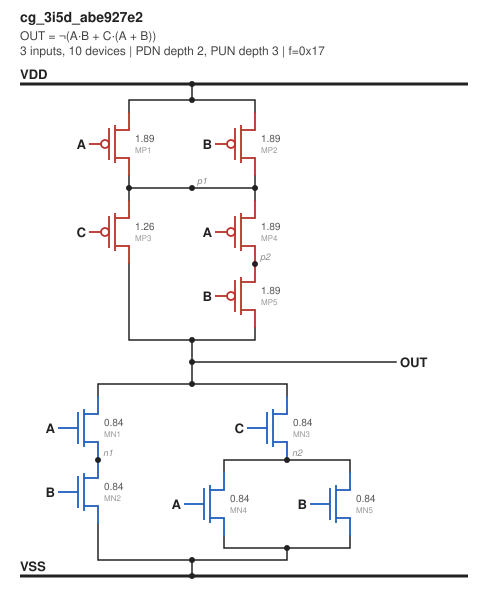
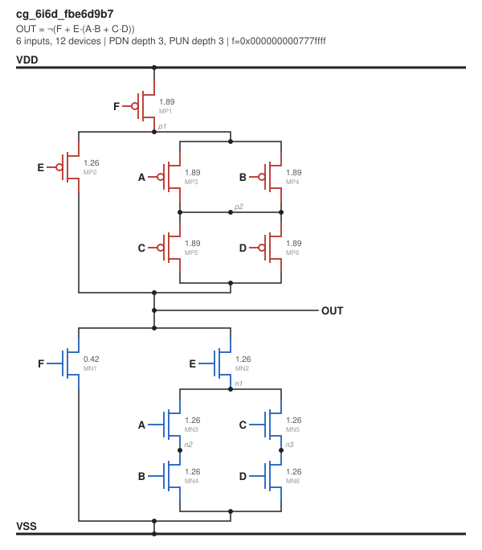
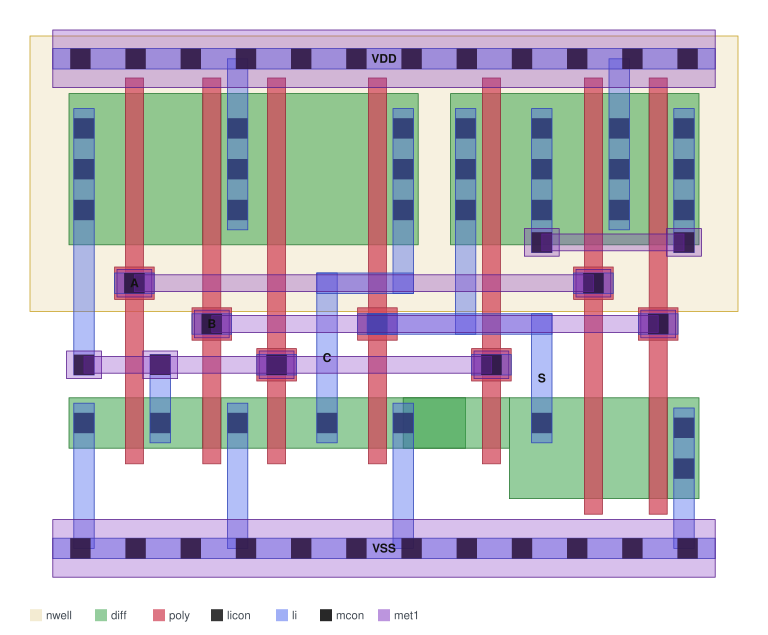
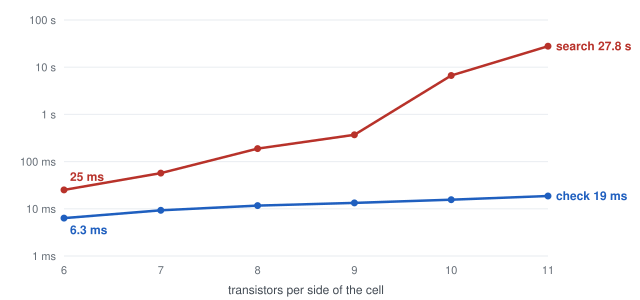
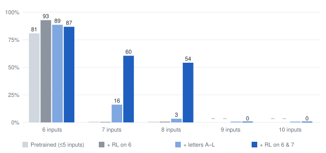
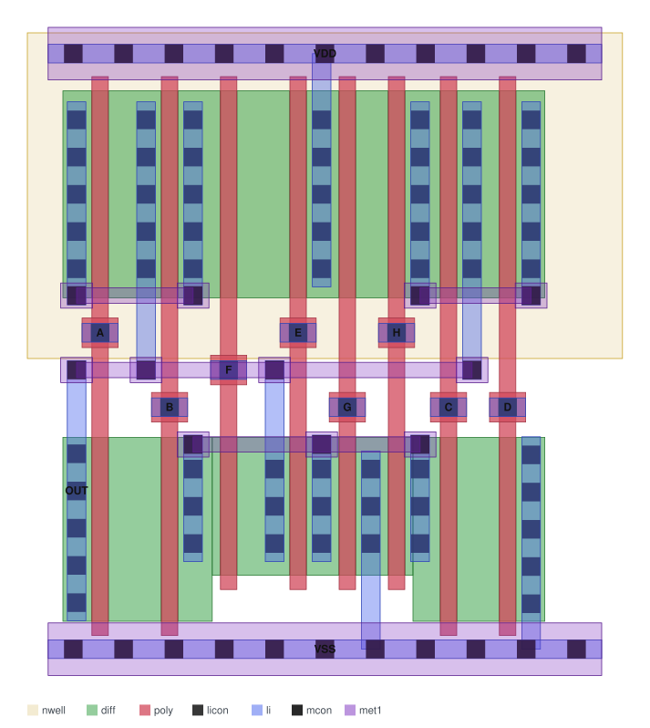

Can a small LLM that runs locally learn to lay out standard cells? The goal is to train one to turn a transistor netlist into a cell layout that passes DRC and LVS on a real foundry process (SkyWater's open 130 nm PDK, SKY130), then open-source the whole pipeline so anyone can rerun it or point it at another process. NVIDIA has done learned cell layout (NVCell) on closed industrial nodes with closed tools. I haven't found an open version against a real PDK. The environment and benchmark are built: every small static-CMOS cell in scope (323 of them), a plan language the model writes, a renderer that turns plans into GDS, classical baselines, and a fast checker audited against the real sign-off tools. On top of that, two kinds of model. A 31.8M-parameter model trained on a laptop GPU writes a whole plan at once; with reinforcement learning it grew from 5-input cells to 8, but stopped dead at 10 transistors per side. A 0.5B-parameter pretrained language model, used as a step-by-step placement policy, generalizes much further: trained only on cells with up to 5 inputs and 9 transistors per side, it places every 9- and 10-input cell it was tested on, and at least one of 8 tries routes for 73–98% of cells with 10 to 12 transistors per side. What still fails there is routing, because those cells run out of wiring tracks.
The pipeline: only the model learns; everything that decides correctness is ordinary, testable code
A standard cell is one small logic gate (a NAND, an AND-OR-invert, a full adder) drawn as polygons on the chip's layers, with a fixed height so cells line up in rows. Every digital chip is built from a library of them. Drawing one well is a puzzle: order the transistors so neighbours can share diffusion (each break costs width), then wire everything up without breaking any of the process's spacing and width rules. The result has to pass two checks: DRC (the layout obeys every geometric rule) and LVS (the circuit extracted from the polygons is the same circuit as the netlist).
This project only covers the classic case: single-row static CMOS combinational cells, one row of PMOS above one row of NMOS. No flip-flops, no multi-row cells, no analog, and no proprietary tools or data anywhere in it.
Small models are bad at coordinate arithmetic, so the model never sees a coordinate. It writes a short layout plan: which order the gates go in, where neighbouring transistors share a source/drain and where the row needs a break, where contacts go, and which routing track each net uses. A deterministic renderer turns the plan into GDS polygons on a fixed template derived from the SKY130 rules. That keeps the model's output short and makes a whole class of mistakes impossible.
The checker gives every plan an exact score: a plan that fails DRC or LVS scores 0, and a passing plan scores higher the narrower it is than the classical Euler-path layout of the same cell. That's the reward for reinforcement learning (GRPO), after supervised fine-tuning on plans the checker has verified. The question isn't whether a large model can do this with enough context; it's how small a model can get to the same quality, and what training recipe gets it there.
The plan changed once the benchmark existed. The original order was an agent loop and fine-tuning, then RL. Instead I trained a tiny model from scratch on synthetic plans, then moved straight to RL, because that answers the main question (how small can the model get?) sooner.
Before writing any generator code I wanted ground truth I could trust. One script runs the full open sign-off flow on a cell: KLayout DRC with the official SKY130 rule deck, Magic extraction, then Netgen LVS against the library netlist. It exits nonzero on any failure. It passes on three stock sky130_fd_sc_hd cells: nand2_1, a21oi_1 and the dfxtp_1 flip-flop. Every version is pinned (the PDK to an exact open_pdks commit, plus Magic, Netgen and KLayout). Getting there had a few traps: the conda build of KLayout has no Ruby, and the SKY130 DRC deck is written in Ruby, so KLayout comes from the official package unpacked into the home directory. And in batch mode the deck quietly turns every rule group off unless you ask for them, which would let a bad layout pass without anyone noticing.
PMOS transistors are weaker than NMOS, so they're drawn wider. To pick how much wider, I swept the width ratio of a minimum-length inverter in ngspice at the typical corner, driving four copies of itself (FO4), and measured rise, fall and average delay. With the high-threshold PMOS the SkyWater library uses, the average delay bottoms out at a ratio of 1.5. The curve is flat there (within 1 ps from 1.25 to 2.25), and equal rise and fall would take a ratio of about 4.2, at a real cost in area. The SkyWater library itself uses 1.54. I adopted 1.5.
FO4 delay vs. PMOS/NMOS width ratio (SKY130, typical corner, 27 °C, HVT PMOS)
The first plan was to sample random logic expressions. Counting the space first showed it's small enough to list completely: every series-parallel pull-down network with up to 6 inputs and at most 3 transistors in series on both the NMOS side and the PMOS side. That includes networks where an input drives more than one transistor (up to inputs + 2 devices, max 8, each one necessary), which is where cells like the inverted majority (a full adder's carry) come from. After merging cells that differ only by renaming inputs, the whole space is 323 cells: 49 where each input drives one transistor and 274 with repeated inputs.
The generator writes each cell as a SPICE netlist and a JSON graph, sized so every transistor scales with the longest series stack it sits in, and it checks every cell at switch level against its truth table, over every input combination, before writing it. The full run takes about 4 seconds and is byte-for-byte reproducible. Since the cell set is small, training data will come from many different plans per cell, and test sets hold out whole cells, never just plans.
Today's piece. A list of 323 netlists isn't something you can look at, so I wrote a renderer that draws each cell as a transistor-level schematic: VDD rail on top, the PMOS pull-up, the output, the NMOS pull-down, ground at the bottom. Transistors in series stack vertically and parallel branches sit side by side. The important part is that the drawing is built from the netlist's own device terminals, not from the logic expression the cell came from. It splits each network into series and parallel blocks using only which nets each transistor connects, so a picture can't show a circuit the netlist doesn't have. Every transistor appears exactly once on its own nets, labelled with its input and width in µm. It's plain Python with no dependencies, the output is deterministic, and tests check the transistor counts in every drawing against the netlist. One command draws any cell, by name (nand3), by logic tree, or all of them into a browsable gallery.

P(C,S(A,B))
P(S(A,B),S(C,P(A,B)))
P(F,S(E,P(S(A,B),S(C,D))))The widths show the sizing rule at work: in the inverted majority, the PMOS in its three-transistor stack is 1.89 µm where a PMOS with nothing in series would be 0.63 µm. SkyWater's own library uses the same width at every stack depth. I kept the stack scaling and made cell height follow it, instead of fixing one template height (see below).
The model's output is a short text plan, one line per column of the cell: a gate, or a shared source/drain with its net in each row and whether it gets a contact. Routes are one line each, naming a net, a layer, a track and the points it connects. Pins name where they land. A half adder (three stages, 14 transistors, two outputs) is 29 lines. A validator checks a plan against its netlist before anything is drawn: every transistor placed once on the right nets, every contact that's needed, every net fully connected, nothing overlapping on a track. Each error names the line and a short code, because those messages are what the model will read when it has to fix a plan.
Two choices shaped it. The format is written column by column, so the same lines work whether the model writes the whole plan at once or one step at a time, which matters for training on cells larger than anything in the fine-tuning set. And cell height isn't fixed: each cell gets the smallest height on the routing grid that fits its widest transistors, so small cells stay small and taller stacks don't need a format change.
The renderer turns a plan into GDS. It owns every coordinate and places columns left to right, each as close as the SKY130 spacing rules allow, so routing choices show up as width instead of errors. A first attempt on an even grid couldn't route even an inverter: a wire dropping into the routing channel ends up 0.06 µm from the gate contact next to it, where the rules need 0.17. Real SkyWater cells have uneven spacing for the same reason. Both hand-written examples pass KLayout DRC, Magic DRC and Netgen LVS. Building the renderer also exposed a constraint I'd missed in the height math: each poly line runs 0.13 µm past its diffusion and has to keep its spacing from the mirrored row's poly across the cell edge, so the smallest cell is 3.06 µm tall rather than SkyWater's 2.72.
Rendered half adder: 5.52 µm × 4.08 µm, DRC- and LVS-clean

The baseline every result gets compared against is the classical one: order the transistors along an Euler path so neighbours share diffusion (Uehara and van Cleemput, 1981), then search the routing tracks. Mine searches the transistor pairings exactly and picks the routing with the fewest tight spots. It lays out all 323 cells, and every one passes KLayout DRC, Magic DRC and Netgen LVS. Widths run from 3 to 13 sites (median 10), and two thirds of the cells need no diffusion break at all. These layouts are also the clean half of the checker's audit.
Training needs a reward in milliseconds, and the real sign-off flow takes seconds per cell. So I wrote a checker in plain Python: the SKY130 design rules the cells can break, and LVS that extracts transistors and nets from the polygons and matches them to the netlist. It takes about 8 ms per cell. It's worthless if it lets a bad layout through, so it gets audited: the 325 clean layouts plus 2,080 deliberately broken ones (shapes shifted, shrunk or deleted, contacts removed, labels moved onto the wrong net), each judged by KLayout DRC, Magic DRC and Netgen LVS together. Result: 0 false passes, and 11 false fails (0.53%), all from a missing-implant rule that's stricter than either tool.
The audit paid for itself. The checker found a real renderer bug on 70 of the 323 baseline cells that KLayout's rule deck doesn't check: diffusion has to extend 0.25 µm past every gate, and between transistors of different widths it fell 0.025 µm short. Magic confirmed it. The audit also turned up two bugs in my ground-truth scripts: parallel runs overwrote each other's extraction files, and LVS was counting "matches, but with wrong transistor widths" as a pass.
The 323 cells are split once and frozen: the split file is committed and hashed, and the scorer refuses any netlist that doesn't match it. train has 111 cells with up to 5 inputs, val has 15 and test_id has 25 from the same range, and test_ood has 172: every 6-input cell, plus every realization of a few common gates (AOI21, NAND3, the inverted majority and others) so familiar logic is held out too. A plan that fails scores 0. A passing plan scores 1 plus how much narrower it is than the Euler baseline for the same cell. A second baseline with no diffusion sharing at all comes out 1.6× wider than Euler on every split.
For a human reference, 20 of the core cells match the function of a hand-drawn SkyWater sky130_fd_sc_hd cell. Averaged over those, the hand-drawn cells are 5.45 sites wide, Euler 6.40 and the no-sharing baseline 8.70. The comparison isn't quite like for like: SkyWater's cells are all 2.72 µm tall, and mine are 3.06 to 5.10 µm because their height follows the transistor sizes. So the Euler baseline is good but beatable, which is the point.
111 training cells are far too few to learn layout from, so the training data comes from outside the benchmark. A generator builds new cell topologies that aren't any of the 323 benchmark cells (deeper stacks, up to 4 in series, and more repeated inputs), lays each one out with the Euler baseline, keeps only plans that pass the checker, and adds copies with the inputs renamed and the transistors placed differently. A fixed 203-token vocabulary encodes the netlist as the prompt and the plan as the answer. The model is a 31.8M-parameter GPT (10 layers, width 512) trained from scratch on my laptop's RTX 3050 with 4 GB of memory. The best run takes about 46 minutes.
| run | training plans / topologies | greedy pass | pass@8 |
|---|---|---|---|
| run0 | 1,825 / 200 | 10% | 25% |
| run1 | 6,467 / 686 | 50% | 67.5% |
| run2 | 31,184 / 1,934 | 70% | 95% |
| run3 | 39,563 / 1,934 (more renames and placements) | 67.5% | 87.5% |
Pass rates are on val + test_id (40 cells). pass@8 counts a cell as solved if any of 8 samples passes. What mattered was the number of distinct topologies: going from 686 to 1,934 took greedy decoding from 50% to 70%. More renamings of the same topologies (run3) added nothing. A grammar constraint during decoding makes every output parse, so the failures left are real layout mistakes, mostly a missing transistor. The most useful number was the gap: a single sample passed only about half the time, yet 95% of cells had a passing plan somewhere in 8 samples. The model often knows a valid layout but doesn't reliably pick it, and that's the gap reinforcement learning is meant to close.
Starting from the best pretrained model, GRPO samples 8 plans per cell for 16 cells per step and scores each one with the fast checker. Each plan's advantage is its reward relative to the other 7 plans for the same cell, and a KL penalty keeps the model close to where it started. Before starting I checked the method could work at all: about 80% of cells got a mix of passing and failing samples, so most steps carry a learning signal. Sampling was the slow part, so I batched it across cells (left-padded prompts, a preallocated attention cache), which cut a step from 26 to 17 seconds.
Four runs, each teaching something:
| test_id (25 cells, scored once) | pretrained | RL run0 | RL run2 | RL run3 |
|---|---|---|---|---|
| per-sample pass | 56.0% | 58.5% | 64.0% | 61.0% |
| first sample passes | 52% | 64% | 72% | 64% |
| pass@8 | 88% | 96% | 92% | 80% |
| greedy pass | 68% | 56% | 72% | 68% |
RL helps, but modestly: the best run adds 8 points per sample and 4 points greedy, which is real but only about 1.5 to 2 standard errors on 200 samples. Passing plans come in at 0.99× the Euler width. Two lessons. First, 15 val cells are too few to choose checkpoints on: val gains of about 22 points shrank to about 8 on test, and the run that looked best on val wasn't best on test. Second, the 6-input test set stays at about 1% for every checkpoint, failing almost entirely on missing transistors. RL on cells with 5 or fewer inputs can't teach a model to lay out 6-input cells. That needs 6-input topologies in the pretraining data.
Finding a good layout is a search that gets expensive fast as cells grow. Checking one stays cheap. That asymmetry is like a hash: easy to verify, hard to produce. It means a model can be trained on cells bigger than anything it has reference layouts for, because the checker's grade is the only label RL needs. I measured both sides on the same cells:
Euler reference search vs. checking one plan, by cell size (log scale)

So the experiment was: pretrain only on cells with at most 5 inputs, then grow outward one step at a time with GRPO, never adding a reference layout for the larger cells. Three things made it work:
Pass@8 by input count at each training stage

The benchmark's held-out set moved too: test_ood went from 54.1% per sample (86.0% within 8) to 77.7% (94.2%) after the last RL round.
An 8-input cell, laid out by a model that never trained on one

Finding the limits was as much the point as the gains. Every axis I tested:
| axis (training max) | probe | before | after | verdict |
|---|---|---|---|---|
| inputs (5) | 7, trained with RL | 3.7% / 16.1% | 44.5% / 60.5% | grew |
| inputs (5) | 8, never trained | 0.5% / 3.3% | 31.5% / 54.2% | grew |
| inputs (5) | 9 and 10 | 0% | 0% | wall |
| stack depth (4) | 5, trained with RL | 7.5% / 21.3% | 16.5% / 30.7% | grew |
| stack depth (4) | 6, never trained | 4.0% / 12.6% | 5.5% / 16.1% | slow |
| transistors per side (9) | 10, 11 and 12 | 0% | 0% | wall |
| function | mirror full-adder stages | 68.8% / 100% | 56.2% / 100% | works untrained |
Values are per sample / within 8 samples. The wall at 10 transistors per side is the main failure: every failing plan stops one gate short, and with no passing samples RL has nothing to learn from. 9- and 10-input cells need 10 or more per side, so they hit the same wall. A probe first pointed at absolute positions: shifting the same prompts 30 positions later in the model's window drops 7- and 8-input cells from 44.5% and 31.5% to 0%. That dependence was real, and a retrain with rotary positions removed it, but it wasn't the wall. The real cause was a column ceiling: the pretraining plans never use a column above 19, every 10-per-side cell needs 20 or more, and the model stops at column 18 or 19 with a transistor still unplaced (see the next section). Two other results were nulls: editing the embeddings of the new transistor widths (averaging, copying the nearest width, extrapolating) changed nothing, and stack depth grew only slowly. One caveat on the test sets: the random sampler lets an input appear more than once, and 108 of the 120 eight-input cells do. Those score lower than cells that use each input once (51.9% vs 75.0% within 8 samples), so they pull the headline number down, not up.
Why it matters beyond the benchmark: a cell's logic mostly stays the same from one process to the next, while the design rules change. If a layout model's training signal is a rule checker, moving to a new process is mostly a matter of swapping the checker and retraining, which could cut the person-months that go into each new standard-cell library. NVIDIA's NVCell work already automates standard-cell layout with machine learning, including RL to fix design-rule errors.
A retrain with rotary positions made the model position-invariant (the 30-position shift now changes nothing) and lifted 7-input cells, but 10 to 12 transistors per side stayed at 0%. Looking at the failures more closely: the pretraining plans never go past column 19, every 10-per-side cell needs at least 20, and the model's plans stop at column 18 or 19 with a transistor unplaced. Forcing the decoder to keep going until every transistor is placed didn't help on its own; the model kept writing columns and drifted. Adding about 250 wide cells to the supervised data (about 5% of it) took 10-per-side cells from 0% to about 19% within 8 samples.
That last result is the kind I decided not to chase. Of course a wall goes away once you train on the regime behind it. The useful question is what representation lets a model succeed on sizes it has never been trained on, so from here every result keeps the top of each axis out of training entirely, and fixes walls with representation, not data.
The one-shot model has to keep the whole growing plan in its head, and it learns how long plans are from its training data. So I split placement into small decisions. At each step the environment shows the model only what it needs: the transistors not yet placed (each as its gate and the two nets it connects) and the last three columns. The model writes one column, the environment checks it against the list of legal moves, and the run stops when every transistor is placed. The existing Euler-baseline router then adds contacts, routes and pins. Nothing in the input says how big the cell is, apart from the shrinking list of transistors left.
left nmos: B OUT-n1 | B VSS-n3 | C OUT-n1 ...
left pmos: ...
last: sd n=n2 p=p3 | g A | sd n=n3 p=OUT
next:The model is Qwen2.5-0.5B, a small pretrained language model, fully fine-tuned on every step of every synthetic Euler plan (539k steps, about half an hour on one rented GPU), with input and internal net names renamed at random so names carry no size information. Then RL with the width reward, on cells from the training range only.
| tested on (trained: ≤5 inputs, ≤9 per side, stack ≤4) | random legal moves | step policy, supervised | + RL (width reward) |
|---|---|---|---|
| 6–8 inputs | 0.3–1.4% / 2–10% | 100% / 100% | 100% / 100% |
| 9 and 10 inputs | 0% / 0% | 100% / 100% | 100% / 100% |
| stack depth 5 / 6 | 0.7% / 5%, 0.1% / 1% | 75% / 100%, 85% / 100% | 81% / 97%, 87% / 100% |
| 10 transistors per side | 0% / 0% | 55% / 97% | 59% / 94% |
| 11 per side | 0% / 0% | 32% / 84% | 42% / 90% |
| 12 per side | 0% / 0% | 24% / 87% | 33% / 73% |
| 8 inputs and 14 per side (within 4) | 0% / 0% | 43% / 80% | 33% / 75% |
Values are per sample / within 8 samples (within 4 for the last row). None of these sizes appear in any training stage. A policy choosing uniformly among the same legal moves, with the same router, scores about 0, so the result comes from what the model learned, not from the environment. Every placement finishes; every failure is the router finding no legal routing for it. Width is 8–10% over the Euler reference per sample after supervised training, 5–7% after RL, and the narrowest of 8 samples is at the reference (1.00–1.01× up to 10 inputs). RL on small cells also narrowed the large ones it never saw.
A control separates the two ingredients. The same step format trained into a 102M model from scratch, with no language pretraining, reaches the same pass rates on every axis, but its layouts are wider (1.21–1.26× the reference per sample). So the format is what generalizes; pretraining buys quality. For comparison, the one-shot approach on the same 0.5B model improved 7- and 8-input cells over the tiny model (8 inputs: 56% within 4 samples, versus about 2% within 8) but still hit the length wall at 9 inputs and 10 per side.
With placement solved, routing is the limit. I built a step-wise routing environment in the same style, where routes can be split and joined at shared points and the contact column is a choice. It reproduces every reference routing exactly, but on 40 placements the baseline router couldn't route, random legal routing in the bigger space routed 1, and a capped search routed none. The cause is capacity. The channel between the rows has 3 tracks on 2 layers, shared with contact stubs and gate pads. Counting how many nets have to cross the channel over any one column predicts routing with no reference to cell size: 3 or fewer always routes, 4 routes 34–73% of the time, 5 routes 10–40%, and 6 routes 0–25%.
Penalizing that density during RL didn't help. In the training range density is almost fixed by the cell, so the model had nothing to learn from, and density on the large cells didn't move. The large cells are dense by nature: the reference layouts for the same cells also cross 4 to 6 nets, and they route because the reference search tries many placements. The next options are to show the model the channel's load while it places, or to let congested cells grow an extra routing track.
November 12, 2026. Routing and congestion. Built a step-wise routing environment with split routes and contact choice; it replays the reference routings exactly. The remaining failures at 10 to 12 per side are channel congestion, not routing search. A density penalty in RL didn't change density on any set, which is a clean negative result: a preference that only matters outside the training range can't be learned inside it.
November 11, 2026. Generalizing instead of covering. Turned placement into a step-wise policy on Qwen2.5-0.5B with environment-held state (described above). Trained on up to 5 inputs and 9 per side, it places every 9- and 10-input test cell and routes 73–98% of 10-to-12-per-side cells within 8 samples. A model trained from scratch matches the pass rates, so the format is what generalizes. RL with the width reward on small cells narrowed the large ones too.
November 10, 2026. Columns past 19. A decoder that can't close a plan with a transistor unplaced changed nothing alone. Adding wide cells to the training data broke the 10-per-side wall (0% to about 19% within 8 samples), which settled the diagnosis but trains on the regime it tests, so it's not the direction I'm taking.
November 9, 2026. Rotary positions. Retrained with rotary positions and value embeddings. The model is now position-invariant and 7-input cells improve, but 10 per side stays at 0%. The wall turned out to be a column ceiling in the training data, not positions.
November 8, 2026. Growing scope. Grew the model from 5-input cells to 8 with RL graded only by the checker, and measured why that's cheap: at 11 transistors per side the reference search takes 27.8 s and a check 19 ms. Added input letters G–L, random-network test sets for each out-of-distribution axis, and a position-shift probe. Never-trained 8-input cells went from 3.3% to 54.2% within 8 samples, and test_ood to 94.2%. 10 transistors per side is still 0% for every model, and the probe ties it to absolute positions, so the next run retrains with relative positions and a longer window.
November 7, 2026. Reinforcement learning. Ran GRPO from the pretrained model against the fast checker (described above). Batched sampling made it about 1.5× faster, and a val check during training now picks the checkpoint. The best run gets 72% of test_id cells right on the first sample (up from 52%) and on the greedy plan (up from 68%). The 6-input cells didn't move. Next is a bigger set of cells to choose checkpoints on, and pretraining data with 6-input topologies.
November 3, 2026. Pretraining a tiny model. Built a synthetic corpus of Euler-labeled plans for topologies outside the benchmark, a tokenizer, a 31.8M-parameter GPT and an eval harness that scores samples with the benchmark's own checker. Four training runs: more distinct topologies helped a lot, more renamings didn't. Best run: 70% greedy, 95% pass@8 on val + test_id.
October 30, 2026. Benchmark. Added the no-sharing baseline, froze and hashed the splits, and wrote the scorer and the results tables, plus the comparison against SkyWater's hand-drawn cells.
October 27, 2026 (later). Plan language, renderer, baseline, fast checker. Settled the plan format and wrote the validator, the renderer, the Euler-path baseline and the fast checker described above. All 323 cells now lay out cleanly, and the checker has zero false passes on 2,080 broken layouts. Next is the benchmark: frozen test splits, the naive baseline, and rendered layouts for the first public release.
October 27, 2026. Schematics. Wrote the schematic renderer described above, plus a command-line tool that generates cells on demand and opens a gallery of all 323 in the browser. Next is the layout plan language: the format the model will write, which has to be settled carefully, since changing it later would invalidate every trained model and dataset built on it.
October 26, 2026. Started. Wrote the project plan, checked that no open LLM or RL cell-layout benchmark already exists (as far as I could find), and got the SKY130 sign-off flow passing on stock cells. Ran the PMOS/NMOS ratio sweep, counted the cell space, and built the netlist generator: 323 cells, all passing their self-check.